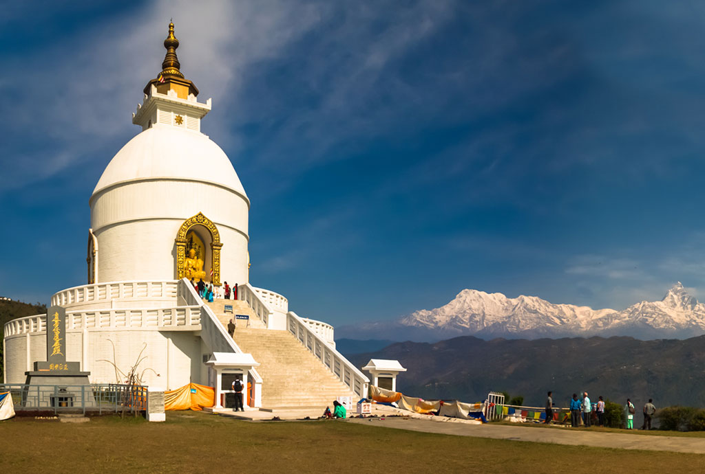
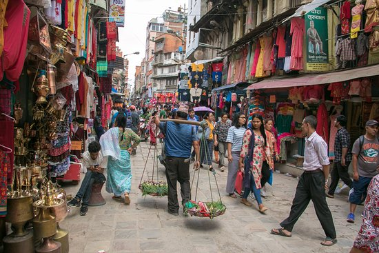
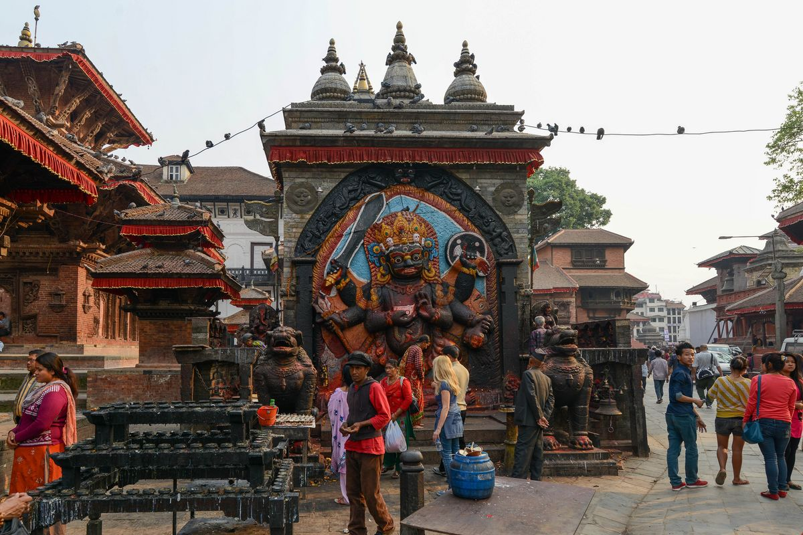
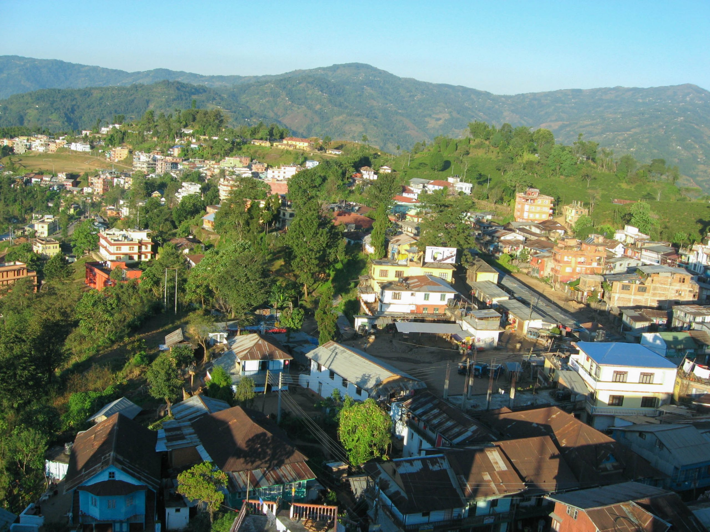

Explore Nepal
Nepal is a diverse country that has become one of the world’s most inspiring tourism destinations. Known for its Himalayan peaks, rich culture, and warm hospitality, Nepal offers experiences that range from adventure and spirituality to nature and cultural exploration. Its unique blend of landscapes and traditions makes it a place where every traveler finds something unforgettable. At the heart of Nepal’s tourism identity is the Himalayas, including Mount Everest, the world’s highest peak. Trekking routes such as Everest Base Camp, Annapurna Circuit, Langtang, and many others attract adventurers from around the globe. These trails offer not just mountain scenery but also encounters with local communities, monasteries, and yak caravans, giving travelers a deeper understanding of life in the high Himalayas. But Nepal is much more than mountains. The country’s cultural heritage is showcased through majestic temples, palaces, stupas, and courtyards found in places like Kathmandu, Patan, and Bhaktapur—many of which are UNESCO World Heritage Sites. These ancient cities reveal centuries-old craftsmanship, architecture, and traditions that still live vibrantly today. In the southern plains, Nepal offers a completely different experience. Chitwan National Park and Bardiya National Park are famous for wildlife safaris where visitors can encounter the one-horned rhinoceros, Bengal tiger, elephants, and hundreds of bird species in their natural habitat. Nepal is also known for spiritual journeys, with sacred sites like Lumbini, the birthplace of Lord Buddha, drawing pilgrims and peace seekers from around the world. Meditation centers, yoga retreats, and monasteries across the country offer deep spiritual experiences in serene environments. Beyond its natural and cultural beauty, the true charm of Nepal lies in its people—known for their friendliness, warmth, and hospitality. Whether exploring mountain villages, bustling cities, or peaceful countryside, visitors feel welcomed and connected. With its breathtaking landscapes, diverse cultures, spiritual heritage, wildlife adventures, and heartfelt hospitality, Nepal stands as a destination that touches the soul and invites travelers to return again and again.


Pokhara is one of Nepal’s most iconic and beloved tourist destinations, known for its breathtaking natural beauty, peaceful atmosphere, and adventure-filled experiences. Often called the “City of Lakes”, Pokhara lies at the foot of the Annapurna mountain range, giving visitors a dramatic combination of serene lakes and towering snow-capped peaks in a single frame. Pokhara’s tourism charm begins with Phewa Lake, where travelers enjoy boating, lakeside walks, and reflections of the mighty Machhapuchhre (Fishtail Mountain) shimmering on calm water. The Lakeside area is a lively hub filled with restaurants, cafés, souvenir shops, and music, making it a perfect blend of relaxation and culture. For adventure enthusiasts, Pokhara is Nepal’s adventure capital. From paragliding over the valley, ziplining, and ultralight flights, to trekking routes like the Annapurna Base Camp (ABC) and Poon Hill, the city offers thrilling activities suitable for every kind of traveler. The city is also home to popular attractions like the World Peace Pagoda, Davis Falls, Gupteshwor Cave, Bindhyabasini Temple, and the International Mountain Museum, each representing religious, natural, and cultural aspects of the region.



Kathmandu, the vibrant capital of Nepal, is a city where ancient heritage and modern lifestyle blend seamlessly, creating a unique and unforgettable experience for travelers. Known as the “City of Temples,” Kathmandu is rich in culture, history, and spirituality, making it one of the most fascinating destinations for tourism in South Asia. At the heart of Kathmandu’s charm are its UNESCO World Heritage Sites—Durbar Square, Swayambhunath (Monkey Temple), Pashupatinath Temple, and Boudhanath Stupa. Each of these sites reflects the city’s deep connection to Hindu and Buddhist traditions, showcasing centuries-old craftsmanship, architecture, and rituals that continue to thrive in daily life. The city's narrow alleys, bustling markets, traditional houses, and vibrant festivals give visitors a chance to experience Nepal’s living culture. Areas like Thamel serve as a tourist hotspot filled with cafés, restaurants, trekking shops, and accommodation options, making it the perfect base for travelers preparing for Himalayan adventures. Kathmandu also offers peaceful escapes amidst the urban energy, such as the Garden of Dreams, heritage walks around Ason and Indra Chowk, and panoramic viewpoints like Chandragiri Hills and Nagarjun. The city’s diverse food culture—from traditional Newari dishes to international cuisines—adds another layer to the travel experience. Despite being a lively urban center, Kathmandu maintains an ancient soul. Its blend of sacred sites, cultural richness, vibrant streets, and warm hospitality makes it an essential destination for anyone exploring Nepal’s tourism landscape.


Chitwan is one of Nepal’s most popular tourist destinations, especially known for its rich wildlife, warm climate, and unique Tharu culture. Located in the southern plains of the country, Chitwan offers a completely different experience compared to the mountains and hills—making it a perfect destination for nature and adventure lovers. At the center of its tourism appeal is the Chitwan National Park, a UNESCO World Heritage Site and one of the best wildlife parks in Asia. Visitors can go on thrilling jungle safaris, jeep tours, or peaceful canoe rides along the Rapti River. These activities provide chances to witness rare animals like the one-horned rhinoceros, Bengal tiger, gharial crocodile, and numerous species of birds in their natural habitat. Chitwan is also famous for its Tharu community, whose traditional lifestyle, houses, dances, and hospitality attract travelers seeking cultural experiences. The Tharu cultural dance shows, village tours, and local cuisine give insight into the ethnic richness of the region. For relaxation, the riverbanks of Sauraha offer beautiful sunsets, peaceful resorts, and various activities like elephant bathing (viewing), birdwatching, cycling, and nature walks. With its blend of wildlife adventure, cultural immersion, and natural beauty, Chitwan stands out as a must-visit destination in Nepal’s tourism landscape.



Ilam, often called the “Queen of Hills”, is a serene and picturesque destination in eastern Nepal known for its lush tea gardens, cool climate, and peaceful natural beauty. It is one of the most attractive places for travelers who enjoy quiet landscapes, greenery, and a refreshing environment. The highlight of Ilam’s tourism is its vast tea estates, which stretch across rolling hills and create a stunning green carpet as far as the eye can see. Places like Kanyam and Fikkal are especially popular for their scenic viewpoints, making them perfect for photography, picnics, and peaceful walks. The early morning mist over the tea gardens adds a magical charm that draws visitors from all over Nepal and beyond. Ilam is rich not only in natural beauty but also in cultural and ecological diversity. Travelers can explore religious and spiritual sites such as Antu Danda, famous for its sunrise views over the eastern Himalayan range, and Mai Pokhari, a sacred and tranquil lake surrounded by forests and wildlife. Ilam’s forests are home to rare plants, birds, and butterflies, making it a delightful spot for nature lovers. The district is also known for its agricultural products—tea, cardamom, ginger, broom grass, and oranges—offering visitors a taste of authentic local life. The calm environment, friendly people, and traditional homestays provide a relaxing escape from busy city life. With its refreshing landscapes, peaceful atmosphere, cultural richness, and welcoming hospitality, Ilam has become one of Nepal’s most beautiful and soothing tourism destinations—perfect for travelers seeking nature, calmness, and scenic beauty.